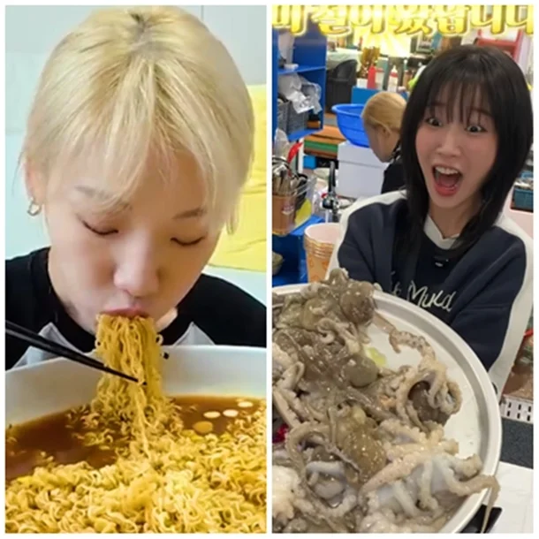
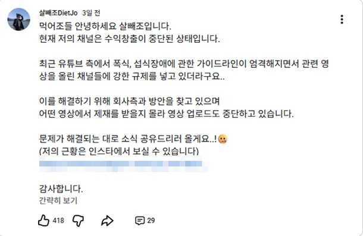

"수익 창출 중단"…쯔양·히밥도 비상, 먹방 유튜버 초긴장 상태 : 네이트 연예


유튜브는 지난 2023년 섭식 장애 관련 콘텐츠 가이드라인을 정리하면서 규제 범위를 확대한 바 있다.
기존에는 섭식 장애를 직접 미화하거나 권장하는 콘텐츠를 주로 제한했으나,
개정 이후에는 미성년자 등 시청자가 따라할 수 있는 섭식 행동까지 관리 대상에 포함됐다.
급기야 9월에는 광고 정책도 커뮤니티 가이드라인에 맞춰 섭식 장애를 다루면서 폭식, 음식을 숨기거나 과도하게 쌓아두는 행위, 설사약 남용 등 시청자가 따라할 수 있는 위험 행동을 안내하는 콘텐츠는 수익을 지급하지 않겠다고 밝혔다.
이 같은 흐름에 따라 쯔양, 히밥 등 대형 채널을 보유한 먹방 유튜버들도 활동에 제약이 걸릴 전망이다.
자승자박아닌가 오히려 다른곳으로 다 옮겨갈텐데